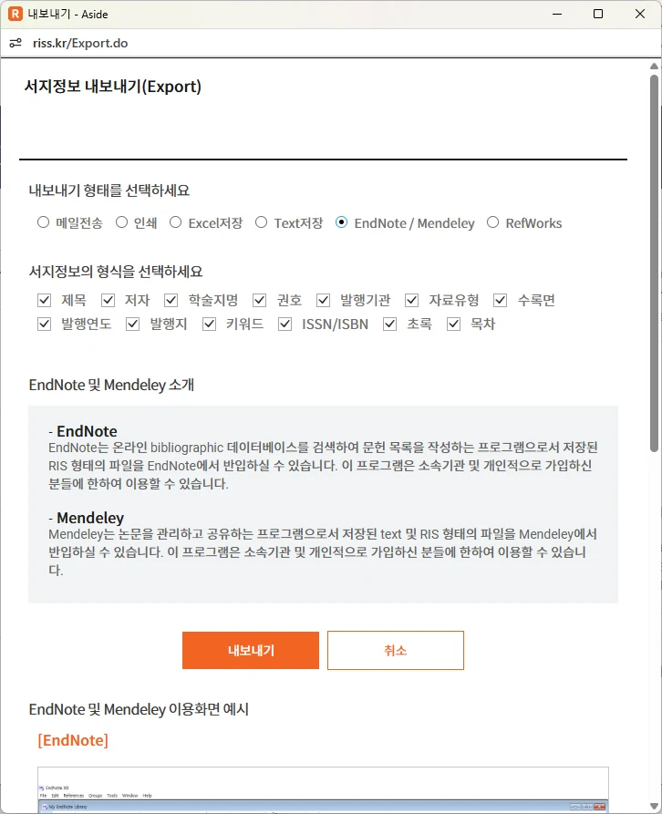
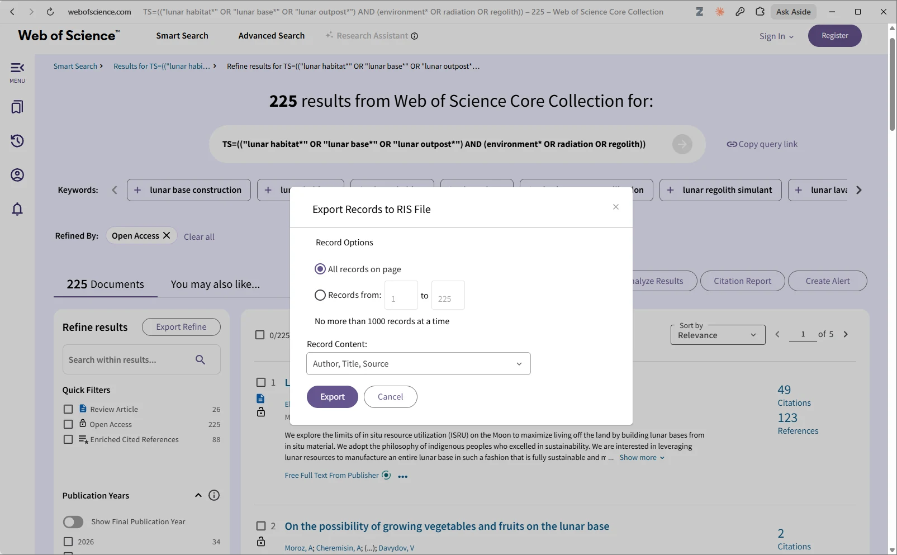
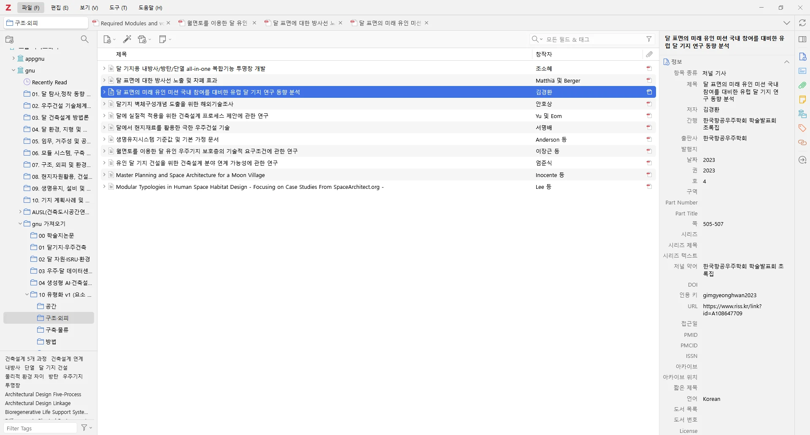
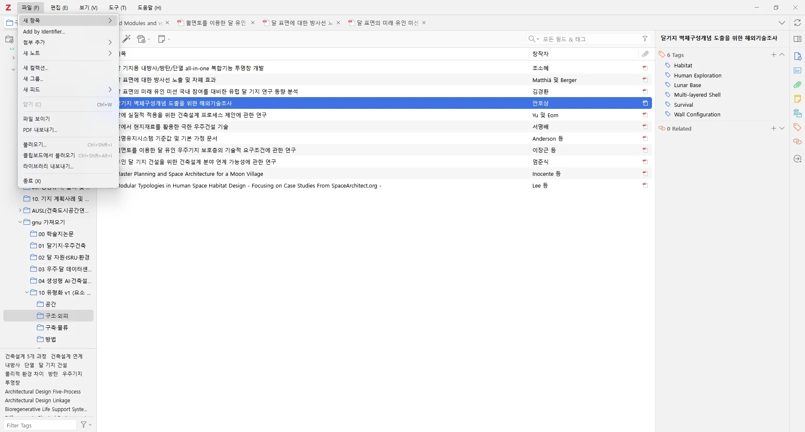
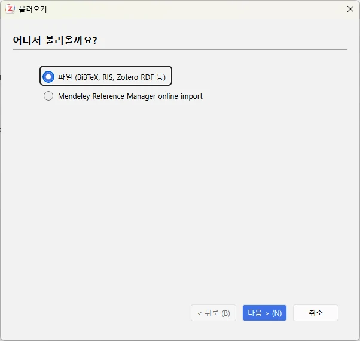
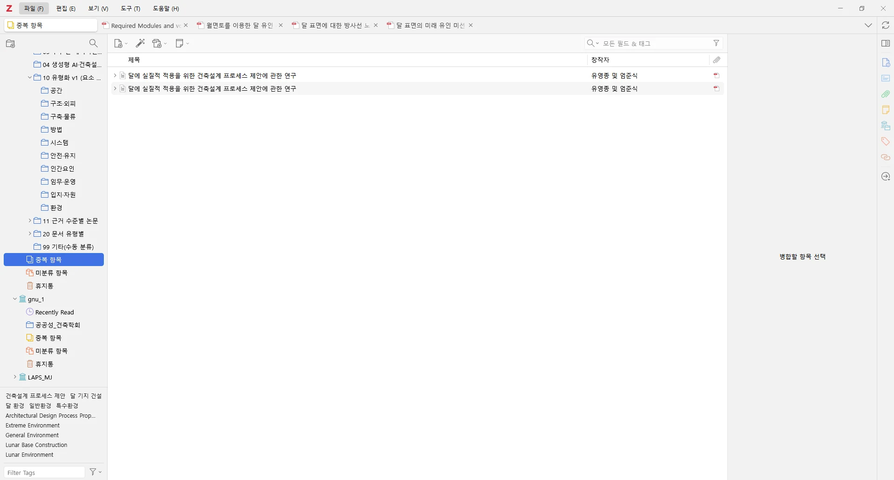
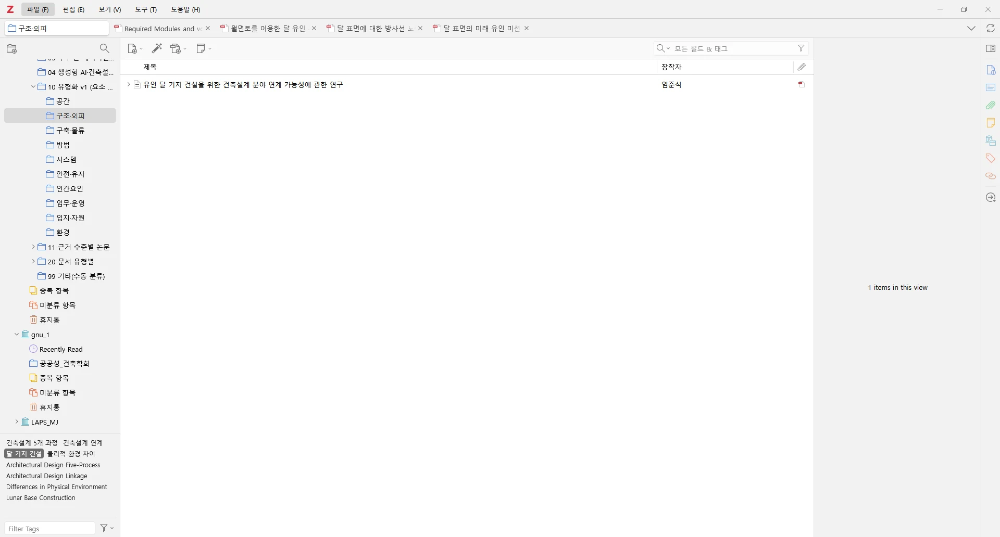
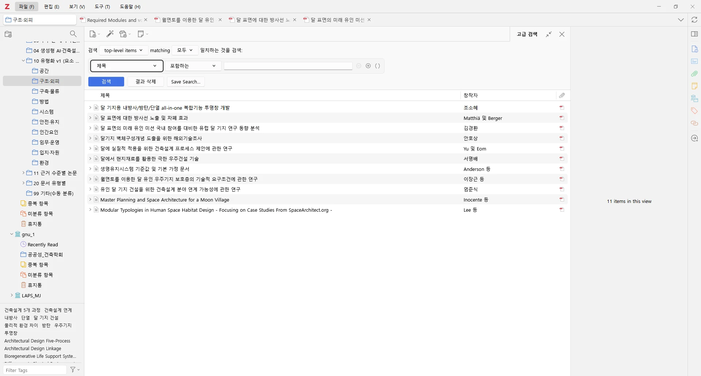
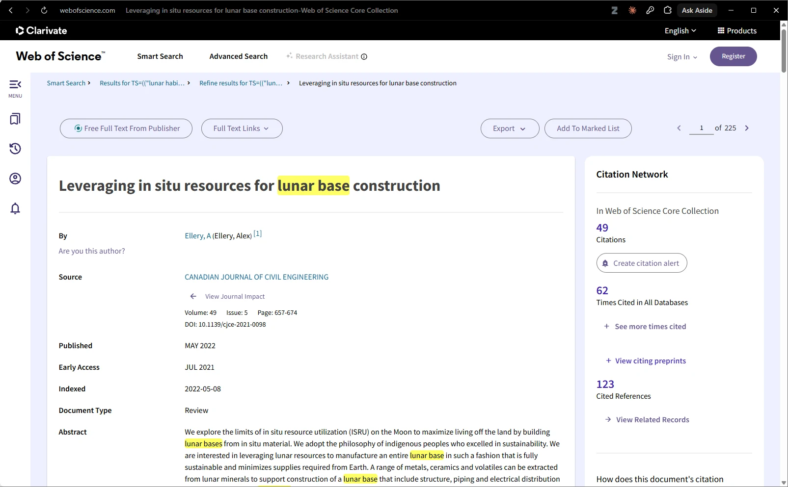
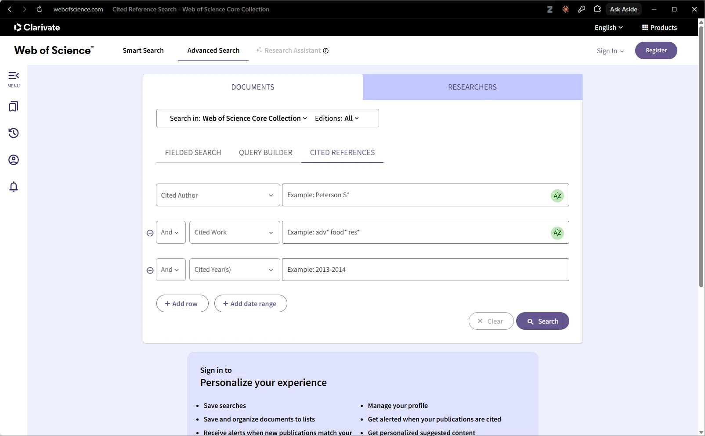

서지 형식과 내보내기
검색을 끝내면 결과를 파일로 내보내 서지 관리 도구로 옮긴다. 이 단계의 목표는 두 가지다. 제목·저자·초록 같은 서지 정보를 잃지 않고 옮기는 것, 그리고 어느 데이터베이스에서 온 기록인지 남기는 것이다.
서지 파일 형식은 여러 가지다. 이 교재에서 쓰는 형식은 아래 표와 같다. 형식 이름은 RISS와 Web of Science(WoS) 내보내기 화면에서 확인한 값이다(2026-10-13 촬영 시점 화면 기준. 이후 화면의 기능 서술도 같은 기준이다).
| 형식 | 설명 | 이 강의에서의 쓰임 |
|---|---|---|
| RIS | 서지 교환용 텍스트 형식. 태그(TY, AU, TI, AB 등)로 항목을 구분한다 | WoS 내보내기 목록에 있다. Zotero 불러오기 대화상자에서 고를 수 있다 |
| BibTeX | LaTeX 계열 서지 형식 | WoS 내보내기 목록에 있다 |
| Excel, Tab delimited | 표 형태 | 건수 집계, 선별표 |
서지 파일은 RIS가 가장 무난하다. 다만 형식 이름만 맞는다고 끝나지 않는다. 내보낼 때 초록이 포함되는지(RISS는 화면의 서지 정보 필드 체크박스, WoS는 Record Content 칸에서 확인한다), 불러온 뒤 한글 제목·초록이 깨지지 않았는지 몇 건을 열어 확인한다. 한글 서지는 인코딩과 필드 대응이 도구마다 달라 깨질 수 있다.
내보내기 전에 정해 둘 것도 있다. 파일 하나에 몇 건이 들어 있는지, 어느 데이터베이스에서 언제 받았는지, 검색식은 무엇이었는지를 파일 이름이나 검색 기록표에 적는다. 검색은 데이터베이스가 갱신되면 건수가 달라질 수 있으므로, 내려받은 원본 파일은 고치지 않고 그대로 보관한다. 정리는 Zotero 안에서 하고, 원본은 나중에 다시 불러오거나 건수를 대조할 때 쓴다.
RISS에서 내보내기
RISS는 검색 결과에서 항목을 체크한 뒤 내보내기 버튼을 누르면 팝업이 열린다. 형태 선택지는 메일전송, 인쇄, Excel, Text, EndNote/Mendeley, RefWorks다. 형태 선택지에는 ‘RIS’라는 이름이 없다. 다만 같은 팝업의 ‘EndNote 및 Mendeley 소개’ 글에는 ‘RIS 형태의 파일’이라는 표현이 나온다. 그래서 이 교재는 “형태에서 ‘EndNote/Mendeley’를 고른다”고 쓴다. 이 교재의 촬영에서는 내보내기를 실행하지 않았으므로, 실제로 내려받는 파일이 어떤 형식인지는 확인하지 못했다. 실제로 쓸 때는 내려받은 파일의 확장자와 첫 줄(TY - )을 한 번 열어 RIS 형식인지 확인한 뒤 Zotero에서 불러온다.

- 내보내기 형태에서 EndNote / Mendeley 선택
- 포함할 서지 정보 필드 체크
- 내보내기 버튼
- EndNote와 Mendeley 소개
Web of Science에서 내보내기
WoS는 결과 화면의 Export 메뉴에 EndNote, Plain text, RIS, BibTeX, Excel, Tab delimited, Printable HTML 같은 선택지가 있다. RIS를 고르면 대화상자가 열린다. 촬영 시점 화면에는 ‘No more than 1000 records at a time’이라고 적혀 있다. 한 번에 1,000건까지만 내보낼 수 있다는 뜻이다. 결과가 1,000건을 넘으면 범위를 나눠 여러 번 내보내고, 파일마다 건수를 적어 둔다. 이 건수가 나중에 흐름도의 데이터베이스별 식별 건수가 된다.

- 현재 페이지 또는 범위 지정
- 한 번에 1,000건까지
- Record Content 선택
- Export 버튼
확대 보기 — 레코드 범위, 1000건 제한, Record Content (촬영 세트: Open Access 필터를 적용한 225건)
- 현재 페이지 전체 또는 범위 지정
- No more than 1000 records at a time
- Record Content: Author, Title, Source
- Export
시연 주제(달 기지 환경 고려요소)에서 필터 없는 WoS 검색은 670건이므로 1,000건 제한에 걸리지 않는다(2026-10-13 촬영 시점). 위의 두 대화상자 화면은 3장의 필터 시연에서 Open Access를 적용한 225건 세트에서 찍었으므로 화면의 건수는 225다. 화면의 Record Content 칸에는 현재 값으로 ‘Author, Title, Source’가 보인다. 이 칸의 선택지는 이번 촬영에서 열어 보지 않았다. 초록이 필요하면 이 칸을 열어 포함 범위를 확인한다.
결과가 많아 범위를 나눌 때는 구간이 겹치거나 비지 않게 시작 번호와 끝 번호를 기록한다. 예를 들어 1~1,000건, 1,001~2,000건처럼 적고 파일별 건수의 합이 화면의 전체 건수와 같은지 대조한다. 합이 맞지 않으면 어느 구간이 빠졌는지 바로 찾을 수 있다. 이 대조는 한 번에 끝나는 일이라 흐름도에 건수를 옮기기 전에 해 두는 편이 안전하다.
Zotero에 불러오기
Zotero는 서지를 모아 두고 정리하는 서지 관리 도구다. 이 교재에서는 데스크톱 프로그램 화면을 쓴다. 메인 창은 세 부분으로 나뉜다. 왼쪽에 컬렉션 트리, 가운데에 항목 목록, 오른쪽에 항목 정보 창이 있고, 왼쪽 아래에 태그 선택기가 있다.

- 컬렉션 트리
- 항목 목록
- 항목 정보 창
- 태그 선택기
불러오기는 파일 메뉴에서 시작한다. 메뉴에는 ‘불러오기…’(Ctrl+Shift+I), ‘클립보드에서 불러오기’, ‘라이브러리 내보내기’가 있다.

- 파일 메뉴
- 불러오기 (Ctrl+Shift+I)
- 클립보드에서 불러오기
- 라이브러리 내보내기
‘불러오기…’를 누르면 대화상자의 첫 화면이 나온다. 여기서 ‘파일’(BibTeX, RIS, Zotero RDF 등)을 고르면 내려받은 서지 파일을 읽어 들인다. 이 교재의 촬영은 대화상자까지만 찍고 취소로 닫았다. 실제 불러오기는 실행하지 않았다.

- 파일(BibTeX, RIS, Zotero RDF 등)
- Mendeley Reference Manager online import
- 다음 버튼
RISS 파일과 WoS 파일은 따로 불러온다. 불러온 직후 출처 태그를 단다. 예를 들어 RISS에서 온 항목에는 src:RISS, WoS에서 온 항목에는 src:WoS를 붙인다. 중복을 병합하면 항목이 하나로 합쳐지므로, 태그를 미리 달아 두면 병합 뒤에도 어느 데이터베이스에서 왔는지 남는다. 불러온 직후에는 항목 몇 건을 열어 제목·초록의 한글이 깨지지 않았는지도 확인한다.
불러온 뒤에는 항목 수를 센다. 파일에 들어 있던 건수와 Zotero에 들어온 건수가 같아야 한다. 다르면 형식 변환에서 항목이 빠졌거나 불러오기 중 오류가 난 것이므로, 선별로 넘어가기 전에 원인을 찾는다. 이 대조 결과도 기록표에 남긴다. 한 컬렉션에 RISS 파일과 WoS 파일을 한꺼번에 넣지 말고, 데이터베이스별 하위 컬렉션을 만들어 따로 불러오면 건수를 세기가 쉽다.
아래 흐름은 이 장의 Zotero 작업을 순서대로 보여 준다. 화면은 모두 같은 촬영본이며, 불러오기와 병합은 실행하지 않고 화면까지만 찍었다.



중복 제거와 태그·컬렉션
여러 데이터베이스를 검색하면 같은 문헌이 둘 이상 들어온다. 선별에 들어가기 전에 이를 정리하고, 병합 전후의 건수를 적는다. PRISMA 2020 흐름도에는 선별 전에 제거한 중복 레코드를 세는 칸이 있다(Page et al., 2021a). 여기서 중복은 같은 보고서를 가리키는 레코드를 뜻한다(Page et al., 2021a, Box 1). 같은 연구라도 보고서가 다르면 중복이 아니다. 이 장의 시연 값은 RISS 14건과 WoS 670건(합계 684건, 2026-10-13 촬영 시점)뿐이다. 이 중 RISS 14건은 3장에서 사용법을 보이려고 검색한 연습 값이며 연구질문의 검색 결과가 아니다. 5장의 입력기에도 입력 방법을 보이려는 시연 값으로만 넣는다. 중복을 병합한 뒤의 건수는 이 촬영에서 얻지 않았으므로 싣지 않는다. 직접 실행할 때 병합 전 건수와 병합 후 건수를 함께 적는다.
병합하면 Zotero는 대표 항목 하나를 남긴다. Zotero 공식 안내(중복 탐지)에 따르면 병합해도 태그와 컬렉션은 유지된다. 어느 항목을 대표로 남길지는 초록과 DOI 같은 필드가 더 완전한 쪽을 고르면 된다. 이 교재의 촬영에서는 병합을 실행하지 않았으므로 병합 뒤의 화면은 싣지 않는다. 병합을 마친 뒤에는 남은 건수를 세어 병합 전 건수와 함께 기록한다.
Zotero의 중복 항목 화면은 왼쪽 트리의 ‘중복 항목’에서 열린다. 촬영한 gnu 그룹 라이브러리에서는 같은 제목의 항목 2건이 중복으로 묶여 나오고, 오른쪽에 병합할 항목을 고르라는 안내가 보인다. 이 시연에서는 병합하지 않았다.
- 중복 항목
- 같은 제목의 항목 2건
- 병합할 항목 선택 안내
확대 보기 — 중복으로 묶인 두 건
- 왼쪽에서 중복 항목 선택
- 같은 제목의 두 건 (병합하지 않음)
태그와 컬렉션
태그는 항목에 붙이는 꼬리표이고, 컬렉션은 폴더처럼 항목을 모아 두는 묶음이다. 일반적으로 한 항목은 여러 컬렉션에 속할 수 있다. 컬렉션은 항목의 사본이 아니라 같은 항목을 가리키는 묶음이기 때문이다. 이 점은 이번 촬영에서 화면으로 확인하지 않았으므로 Zotero 안내서로 확인한다. 이 교재의 화면에서는 태그 선택기를 확인했다. 선택기에서 태그 ‘달 기지 건설’을 고르자 목록이 1건으로 좁혀지고 ‘1 items in this view’라는 문구가 나왔다.
- 선택한 태그 ‘달 기지 건설’
- 태그 선택기
- 목록이 1건으로 좁혀진 항목
- 1 items in this view
태그는 두 종류로 나누어 쓰면 편하다. 하나는 src:RISS 같은 출처 태그이고, 다른 하나는 선별 단계나 주제를 적는 작업 태그다. 두 종류를 이름으로 구분해 두면 나중에 흐름도 건수를 셀 때 태그 선택기로 바로 좁혀 볼 수 있다.
컬렉션은 단계별로 나누는 방법도 있다. 예를 들어 ‘불러온 원본’, ‘중복 제거 후’, ‘제목·초록 통과’처럼 단계 이름을 컬렉션으로 두면 각 단계에 남은 건수가 곧 화면의 항목 수가 된다. 어느 방식을 택하든 프로토콜에 규칙을 적어 두고 팀원이 같은 규칙을 쓰게 한다.
인용 추적
검색식은 완벽하지 않다. 핵심 논문이 쓰는 용어가 검색어와 다르면 놓치는 문헌이 생긴다. 이를 보완하는 방법이 인용 추적이다. 인용 추적에는 두 방향이 있다.
예를 들어 환경 요인을 다룬 달 기지 논문이 ‘레골리스’ 대신 ‘달 토양’이라는 말을 썼다면, 검색식에 레골리스만 넣은 경우 그 논문은 빠진다. 그러나 이미 찾은 핵심 논문의 참고문헌 목록이나 그 논문을 인용한 논문 목록에는 그 논문이 나타날 수 있다. 인용 추적은 검색어가 아니라 문헌 사이의 연결을 따라가므로 용어 차이에 덜 흔들린다.
| 방향 | 하는 일 | WoS 화면에서의 위치 |
|---|---|---|
| 후방 추적 | 핵심 논문의 참고문헌을 거슬러 올라간다 | 논문 상세의 Cited References |
| 전방 추적 | 핵심 논문을 인용한 문헌을 찾는다 | 논문 상세의 Citations, 그리고 Cited References 검색 |
WoS 논문 상세 화면의 오른쪽에는 Citation Network 패널이 있다. 촬영한 논문(Ellery A., 2022, Canadian J. Civil Eng. 49(5))에서는 Citations 49, Times Cited in All Databases 62, Cited References 123이 보였다(2026-10-13 촬영 시점). Citations 49와 All Databases 62가 다르므로, 어느 범위의 인용 수를 언제 보았는지 적는다.

- 논문 제목
- Citation Network 패널
- Export 버튼
확대 보기 — Citation Network
- Citations 49
- Times Cited in All Databases 62
- Cited References 123
- View Related Records
‘Cited References’ 검색 탭은 앞의 두 방향 가운데 전방 추적 도구로 쓰인다. 촬영한 화면에는 Cited Author, Cited Work, Cited Year(s) 입력란과 Search 버튼만 있고 설명 문구는 없다. 이 탭은 입력한 저작을 인용한 논문을 찾는 용도로 알려져 있으며, WoS에 수록되지 않은 기준문서·보고서·단행본도 입력할 수 있다고 알려져 있다. 이 촬영에서는 검색을 실행하지 않았으므로 실제 동작은 Clarivate 도움말에서 확인하고 한 번 시험해 본다. 건축·공학처럼 기준문서와 보고서를 많이 인용하는 분야에서는 이 점이 쓸모가 있을 수 있다. 참고문헌을 거슬러 가는 후방 추적은 논문 상세의 Cited References 목록에서 한다. 같은 ‘Cited References’라는 이름이 논문 상세 패널(후방)과 검색 탭(전방)에 함께 쓰이지만 방향은 반대다.

- Cited References 탭
- Cited Author, Cited Work, Cited Year(s) 입력
- Search 버튼
인용 추적으로 찾은 문헌도 데이터베이스 검색으로 찾은 문헌과 같은 기준으로 선별한다. 흐름도에서는 ‘기타 방법’ 열에 따로 센다. 데이터베이스 열에 섞어 넣지 않는다. 추적으로 찾았더라도 이미 데이터베이스 검색에 있던 문헌은 기타 방법 열에 새로 세지 않고, 어떻게 셌는지는 본문에 밝힌다. 이렇게 해야 검색식이 놓친 문헌을 추적이 얼마나 보탰는지 읽을 수 있다. 참고문헌과 인용 문헌을 따라가며 찾는 절차는 스노볼링이라 부르며, 소프트웨어공학 분야에서 지침이 제안되었다(Wohlin, 2014). 건수는 이 촬영에서 세지 않았으므로 흐름도의 기타 방법 칸은 비워 둔다.
추적은 무한히 이어질 수 있으므로 멈추는 규칙을 프로토콜에 미리 적는다. 어떤 논문을 출발점으로 삼는지, 한 단계만 따라가는지, 추적한 날짜와 데이터베이스는 어디인지를 적는다. 어느 데이터베이스의 인용 수를 쓰느냐에 따라 전방 추적의 결과가 달라지므로, 추적한 날짜와 범위를 함께 기록해야 다른 사람이 같은 절차를 다시 해 볼 수 있다.
저장 검색과 협업
Zotero의 고급 검색은 조건 행을 더해 라이브러리를 거르는 기능이다. 조건 행은 ‘제목 / 포함하는 / 값’ 같은 세 칸으로 되어 있고, 검색과 결과 삭제, Save Search 버튼이 있다. 이 교재의 촬영은 버튼의 위치까지만 확인했고 저장은 실행하지 않았다.
- 고급 검색 패널
- 조건 행: 제목, 포함하는, 값
- 검색, 결과 삭제, Save Search 버튼
- 검색 결과 목록
확대 보기 — 고급 검색 조건
- matching 모두
- 조건 행
- Save Search
여럿이 함께 작업할 때는 그룹 라이브러리를 쓸 수 있다. 그룹 라이브러리는 서지를 함께 쓰기에는 좋다. 다만 서로의 태그와 메모가 보이므로 독립 선별은 되지 않는다. PRISMA 2020은 선별에 참여한 사람 수와 독립적으로 했는지를 보고하라고 요구한다(항목 8; Page et al., 2021a). 독립 선별은 각자 따로 만든 선별표(엑셀)나, 눈가림 기능이 있는 선별 도구(예: Rayyan; Ouzzani et al., 2016)로 한 뒤 결과를 합친다. 선별은 제5장에서 다룬다.
팀이 같은 조건으로 라이브러리를 거르려면 조건을 말로 전하는 것보다 글로 적어 두는 편이 정확하다. 저장한 검색을 그룹에서 공유할 수 있는지는 이번 촬영에서 확인하지 않았으므로 Zotero 안내서로 확인한다. 한편 선별 단계의 판정은 서로 보지 않은 상태에서 내려야 하므로, 그룹 라이브러리에서는 판정 태그를 달지 않고 판정은 각자의 선별표에 적는다. 선별표를 합친 뒤에 불일치를 논의해 푼다.
| 용어 | 정의 |
|---|---|
| RIS | 서지 교환용 텍스트 형식. TY, AU, TI, AB 같은 태그로 항목을 구분한다 |
| BibTeX | LaTeX 계열에서 쓰는 서지 형식 |
| 출처 태그 | 불러온 직후 항목에 다는 꼬리표. src:RISS, src:WoS처럼 데이터베이스를 구분한다 |
| 중복 제거 | 여러 데이터베이스에서 들어온 같은 문헌(같은 보고서)의 레코드를 하나로 합치는 일. 같은 연구의 다른 보고서는 합치지 않는다. 병합 전후 건수를 적는다 |
| 컬렉션 | Zotero에서 항목을 모아 두는 폴더 같은 묶음 |
| 후방 추적 | 핵심 논문의 참고문헌을 거슬러 올라가며 찾는 방법 |
| 전방 추적 | 핵심 논문을 인용한 문헌을 찾는 방법 |
| Save Search | Zotero 고급 검색 패널의 검색 조건 저장 버튼. 이 교재의 촬영에서는 실행하지 않았다 |
- 서지 파일은 내보낼 때 초록이 포함되는지 확인하고, 불러온 뒤 한글이 깨지지 않았는지 몇 건을 열어 본다. WoS는 촬영 시점 화면 기준 한 번에 1,000건까지 내보낸다.
- RISS는 형태에서 ‘EndNote/Mendeley’를 고르되 내려받은 파일의 형식은 직접 확인한다. 불러온 직후 출처 태그를 달아 두면 병합 뒤에도 데이터베이스를 구분할 수 있다.
- Zotero 중복 탐지는 한 라이브러리 안에서 제목·DOI·ISBN 등을 비교해 묶으므로 국문·영문 제목이 다른 같은 논문은 놓친다. 병합 전후 건수를 적고, 같은 연구의 다른 보고서는 병합하지 않는다.
- 후방·전방 인용 추적으로 찾은 문헌도 같은 기준으로 선별하고 ‘기타 방법’ 열에 따로 센다. 그룹 라이브러리는 독립 선별을 대신하지 못한다.
참고문헌
- Bramer, W. M., Giustini, D., de Jonge, G. B., Holland, L., & Bekhuis, T. (2016). De-duplication of database search results for systematic reviews in EndNote. Journal of the Medical Library Association, 104(3), 240-243. https://doi.org/10.5195/jmla.2016.24
- Ouzzani, M., Hammady, H., Fedorowicz, Z., & Elmagarmid, A. (2016). Rayyan - a web and mobile app for systematic reviews. Systematic Reviews, 5, Article 210. https://doi.org/10.1186/s13643-016-0384-4
- Page, M. J., McKenzie, J. E., Bossuyt, P. M., Boutron, I., Hoffmann, T. C., Mulrow, C. D., Shamseer, L., Tetzlaff, J. M., Akl, E. A., Brennan, S. E., Chou, R., Glanville, J., Grimshaw, J. M., Hróbjartsson, A., Lalu, M. M., Li, T., Loder, E. W., Mayo-Wilson, E., McDonald, S., . . . Moher, D. (2021a). The PRISMA 2020 statement: An updated guideline for reporting systematic reviews. BMJ, 372, Article n71. https://doi.org/10.1136/bmj.n71
- Wohlin, C. (2014). Guidelines for snowballing in systematic literature studies and a replication in software engineering. In Proceedings of the 18th International Conference on Evaluation and Assessment in Software Engineering (pp. 1-10). ACM. https://doi.org/10.1145/2601248.2601268